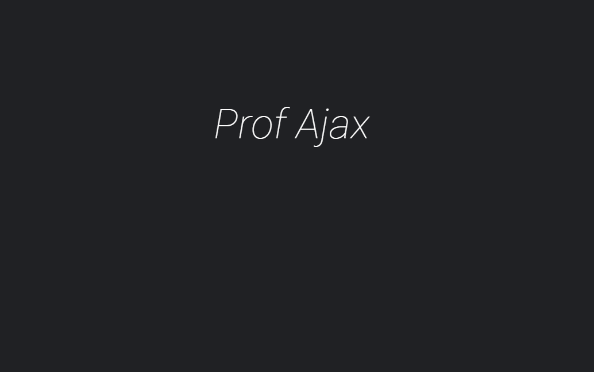

HOME
Músicas para programação
Aulas grátis
Planos
Contato
Músicas para Programação
The Black Eyed Peas - I Gotta Feeling
Seu navegador não suporta o elemento de áudio.
O Grande Amor da Minha Vida - Gian & Giovani
Seu navegador não suporta o elemento de áudio.
Sweet Child O' Mine - Guns N' Roses
Seu navegador não suporta o elemento de áudio.